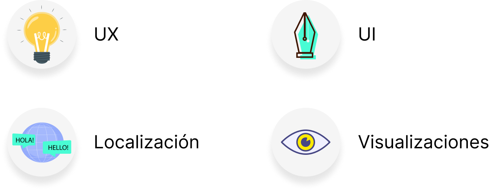

Designs to a t.
Tamara Abeldaño - Diseñadora UI/UX li: tamaraabeldanio
Intro
👋 ¡Hola! Soy Tamara Abeldaño, diseñadora especializada en interfaces y experiencias de usuario (UX/UI) con una sólida experiencia en el sector del Internet de las Cosas (IoT).
Mis servicios incluyen:

Mi verdadero fuerte es la visualización de información. Mi especialidad radica en hacer que la información sea accesible y fácil de entender para todos mediante interfaces claras e intuitivas que facilitan la comprensión de los datos.
Proyectos Destacados
En mis dos años de carrera, he participado en proyectos que no solo han mejorado las operaciones cotidianas de mis clientes sino que también promovieron la sostenibilidad y la eficiencia de diversas industrias.
Control de Polvo en Acería: Aplicación IoT que optimizó el uso de agua en en un parque industrial para controlar los niveles de polvo. La app no solo consiguió mantener los niveles de polvo en márgenes aceptables, sino que también redujo el consumo de agua de la empresa en un 80% y les hizo ganar un premio por innovación y compromiso con el medio ambiente.

Mantenimiento de Flotas: Aplicación para monitorear el estado de los activos dentro de una flota. La aplicación móvil recopila las respuestas de los operadores a través de un cuestionario. Mientras tanto, la interfaz web permite a los mecánicos y supervisores ver el estado de los activos en tiempo real, priorizar problemas por gravedad, filtrar activos no revisados y editar o cargar cuestionarios según las categorías de activos. Esta aplicación fue pensada para reducir efectivamente el tiempo de inactividad de los activos y garantizar que estén siempre actualizados.

Impacto Ambiental de la Comida: Debido a que los proyectos en los que he participado son confidenciales y para poder mostrar mis habilidades, en mi tiempo libre he diseñado una aplicación que combina mi pasión por el diseño con mi compromiso por la sostenibilidad 🌎.

Haz clic en abajo para ver el estudio de caso de este proyecto: 'Food Print' ⬇️.
Quién soy
Descubrí mi pasión por UX de manera accidental mientras me formaba como desarrolladora front-end. Con una base en traducción, abordo cada proyecto con el objetivo de transmitir mensajes de manera clara y efectiva. Actualmente, estoy ampliando mis conocimientos en ludificación, metodologías ágiles e inteligencia artificial para diseñadores, para incorporar nuevas herramientas en mi flujo de trabajo.
Si deseas saber más sobre mí y mi experiencia, haz clic aquí para ver mi currículum.

Contacto
Si has llegado hasta aquí, es posible que estés considerando cómo podríamos colaborar en tu próximo proyecto. Te invito a contactarme a través de mi correo electrónico o a conectar conmigo en LinkedIn. 🚀.
-
Correo Electrónico
tamara.abeldanio@gmail.com -
Linkedin
tamaraabeldanio -
Address
En algún lugar entre Argentina y Nueva Zelanda -
¡Gracias!